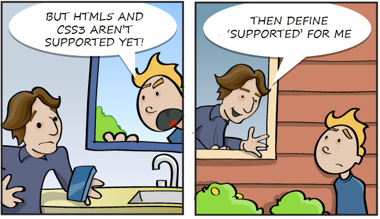

INTRO
use the arrow keys to navigate; press space for slide overviewINTRO
Say hello to HTML5
Say hello to HTML5 (1)
Mozilla also recently ported the popular Unreal 3 gaming engine to Javascript, check this video
You can also play quake here
You can also play quake here
Say hello to HTML5 (2)
-
some buzzwords:
- HTML canvas
- HTML audio & video
- WebGL 3D graphics
- CSS3 animations & filters
- web sockets
- file API, audio API
- localStorage, sessionStorage
- webSQL
- notifications
- geolocation
- ...and many many more
Say hello to HTML5
- shift from desktop to web-based applications
- some notorious examples: google docs, webmail, Dropbox, Picozu image editor...
Webbased applications have huge advantages over classic applications:
- you always have the latest version
- no updates needed
- no program installation needed
- little hardware requirements
- accessible everywhere
- uniform technology makes it easier to use and intergrate existing libraries and modules
- Internet connection needed (although offline applications are possible)
- performance issues, especially with large files
- difficult to protect your code
Say hello to HTML5
- Plugins are dead
Some of the companies that do or will not support Flash or Silverlight anymore:
- Apple: iPhone and iPad
- Microsoft IE10 metro version (although they do support a whitelist of Flash sites like Youtube)
- Google Chrome mobile version
- Android >= 4.0
- does not require much programming skills
- they like the vector-graphics look and feel
- they like the graphic tools
- lot of work keeping all plugins up-to-date
- not accessible for the blind
- impossible to bookmark a single page
- backbutton usually does not work anymore
- loads slower and more bandwidth heavy
- harder for the programmer to maintain
- dramatic for your Google ranking
- sometimes unstable & regular crashes
- eats your battery (mobile!)
but what is HTML5?
-
New HTML:
- markup (new tags and attributes)
- semantics (microdata, link relations, ARIA)
- webforms
- audio & video
- jump to part 1: HTML
but what is HTML5?
-
New CSS:
- typography and layout (gradients, mulitcolumn, rounded corners, shadows...)
- webfonts
- filters
- transitions, transforms and animations
- jump to part 2: CSS3
but what is HTML5?
-
New Javascript tools:
- language enhancements (querySelectorAll, requestAnimationFrame...)
- graphics (canvas, WebGl, SVG)
- storage (localStorage, sessionStorage, webSQL, IndexedDB)
- application development (web workers, application cache, file API, audio API, notifications, drag drop, web sockets)
- mobile development (geolocation)
- jump to part 3: Javascript
INTRO
Using HTML5
Can I use...? (1)
-
How to decide whether to use a technique or not?
Parties involved:
- W3C → draft and publish the standards (actually not very important factor)
- browser vendors → implement standards and experiment with new features
- visitors → choose device and browser (adoptation rate)
- website owner → target audience and graceful degradation expectations
- open source community → available code snippets, frameworks...
- you → skills, favorites...
Can I use...? (2)
-
Get a general idea of browser support:
- Peacekeeper (performance test)
- HTML5test (compatibility test)
- html5readiness.com (nice visualization)
- CSS3test (compatibility test)
- Exellent quick reference:
- If you're desperate to know all the details:
Can I use...? (3)

Vendor prefixes
-
Use vendor prefixes for experimental CSS3 (check latest list on shouldiprefix.com):
.rotated { -webkit-transform: rotate(30deg); /* Ch <36, Saf 5.1+, iOS < 9.2, An =<4.4.4 */ -ms-transform: rotate(30deg); /* IE 9 */ transform: rotate(30deg); /* IE 10, Fx 16+, Op 12.1+ */ } - Invented to allow different implementations
- Further reading:
Feature fallback (1)
- More useful than compatibility tables is feature detection with a fallback for unsupporting browsers.
- The most popular feature detection tool is Modernizr
-
Provides Javascript feature detection API and adds CSS classes to the
<html>element:
Two terms used for fallbacks are shim and polyfill, where a polyfill tries to mimic the standards-based API, and a shim is a more general fix for a missing feature, albeit with a different and less future-proof code. More reading on polyfills and shims here.
Feature fallback (2)
-
Fallback example for a CSS3 property using Modernizr's
.no-boxshadowclass:/* CSS3 box shadow */ .box { border: none; box-shadow: #666 1px 1px 1px; } /* fallback: simulate box shadow using borders */ .no-boxshadow .box { border-bottom: 1px solid #666; border-right: 1px solid #777; }
Feature fallback (3)
-
Fallback example for a HTML5 form control using html5Widgets polyfill:
<!DOCTYPE html> <html lang="en"> <head> <meta charset="utf-8"> <title>HTML5 date time examples</title> <link rel="stylesheet" href="lib/html5Widgets/js/jscalendar-1.0/calendar-win2k-1.css" /> <!-- Needed for Date/Time Elements --> <script src="lib/html5Widgets/js/jscalendar-1.0/calendar.js"></script> <script src="lib/html5Widgets/js/jscalendar-1.0/lang/calendar-en.js"></script> <script src="lib/html5Widgets/js/jscalendar-1.0/calendar-setup.js"></script> <!-- What glues all the above together --> <script src="lib/modernizr-1.5.min.js"></script> <script src="lib/html5Widgets/js/EventHelpers.js"></script> <script src="lib/html5Widgets/js/html5Widgets.js"></script> </head> <body> <form action="#"> <dl> <dt><label for="birthday">Birthday: </dt> <dd><input type="datetime" name="birthday" id="birthday" /></dd> </dl> </form> </body> </html>
- for a list of available fallbacks see Paul Irish's list
Feature fallback (4)
-
Fallback example for a Javascript feature using yepnope script loader:
yepnope({ test: Modernizr.geolocation, yep: 'normal.js', nope: ['polyfill.js', 'wrapper.js'] }); -
Some Internet Explorer specific fixes:
- selectivizr.com: fixes IE 6–8 pseudoclasses and attribute selectors
- css3pie.com: fixes many CSS3 decoration features for IE 6–9
Graceful degradation (1)
- Sometimes a suited fallback is not available or too complex
- But: websites do not need to look identical in every browser
- Example for CSS3 animations (see farukat.es):
-
supported in Chrome19
unsupported but still acceptable in IE9
Graceful degradation (2)
- Example for CSS3 rounded corners and box shadow:
-

the unsupported version on the right is still acceptable -
This is called graceful degradation
- code for the best browser first
- provide acceptable fallback for lesser browsers
- 'top-down' approach
Graceful degradation (3)
- These small differences may even help pushing users to better browsers
-
Differences are ok as long as they are non-critical:
critical non-critical Accessibility Presentation Layout Design Usability Experience
- Interesting reading on common CSS3 fallbacks: Using CSS3 — Older Browsers And Common Considerations
Progressive enhancement
- For new media (mobile, tablets...) elegant graceful degradation is not always easy
-
Another approach you'll hear is progressive enhancement:
- code for least supporting browsers first
- use CSS3/Javascript to enhance the experience for more capable browsers
- 'bottom-up' approach
-
Can be used together with feature detection:
- if drag drop supported: add drag drop
- if application cache supported: provide offline version
- ...
- nice in theory, but feature detection/injection is time consuming and costly
Alas: it is not yet possible to query for network speed, although it makes a great difference if a device is on Wifi or on a mobile network. A tablet on mobile network will be served the full-blown version, while a smartphone on Wifi will get the reduced version. Expectations are that future specifications will be built to address this problem.
Responsive Design
-
Responsive design = fluid layout + flexible images + media queries:
/* will only execulte if screen is 800px wide or smaller */ @media screen and (min-width: 800px) { .myClass { background: #ccc; } } - Some examples (change browser width):
- (apart from some media queries device) independent code; see the presentation about Responsive Design
To wrap things up...
-
Start using HTML5 today:
- use the HTML5 doctype and syntax
- use new elements, provide polyfills if necessary
- use HTML5 audio & video, provide Flash fallback if necessary
-
Start using new Javascript today:
- create HTML5 games with canvas if you can ignore IE<9 (yes you can)
- create amazing 3D experiments with WebGL
- enhance your applications with drag-drop, geolocation, notifications...
-
Start using CSS3 today:
- improve your design with non-critical enhancement features like shadows, rounded corners, animations...
References
- Further reading (after finishing all HTML5 presentations):
-
Some credits:
-
HTML5 comic by Brad Colbow & Keith Jeremy
http://coding.smashingmagazine....xhtml-2-comic-strip/ -
Goldfish blender story
http://www.crazynews.net/dp/1-167.htm -
Excellent HTML5 overview
http://slides.html5rocks.com/ -
CSS3 progress report
http://www.w3.org/Style/CSS/current-work
-
HTML5 comic by Brad Colbow & Keith Jeremy